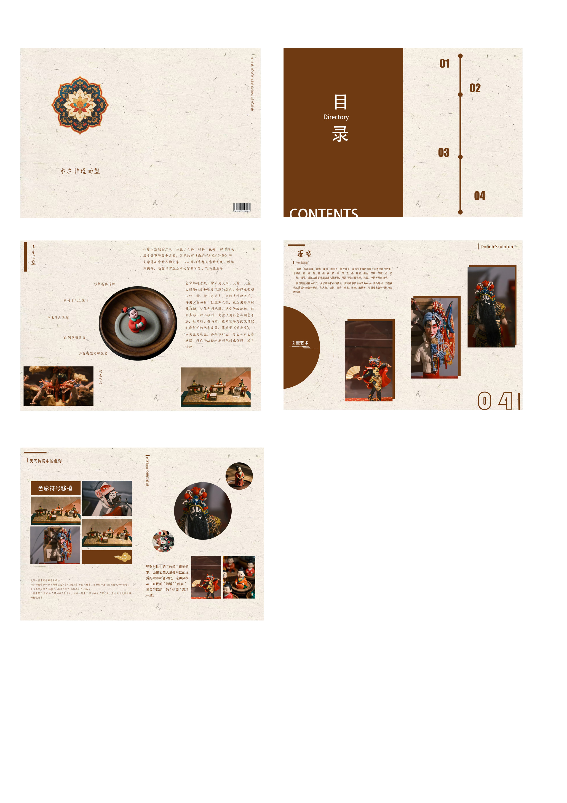

乡土与传承ROOTS & HERITAGE
ZAOZHUANG / FOLK ART
面塑之间
枣庄非遗面塑 · 主题画册
THE ART OF DOUGH SCULPTURE
A STUDY OF FORM, COLOUR & CULTURE

封面 / 以标题与传统纹样建立视觉识别01 / COVER
目录
CONTENTS01
02
指尖造物THE MAKING OF FORM
03
戏曲人物CHARACTERS & STORIES
04
民间色彩A FOLK PALETTE
面塑之间 / 内容索引CONTENTS
目录 / 补全章节标题，统一层级02 / INDEX
01 / ROOTS & HERITAGE乡土与传承
一团面，一双手。
让民间故事在指尖延续。
小小的面塑，连接着日常生活中的人物、戏曲与想象。
指尖造物 / 从人物造型观察民间艺术的细节与趣味。
THE ART OF DOUGH SCULPTURE01—02
内页 / 整理主体图与辅助图关系03 / CONTEXT
03 / CHARACTERS & STORIES戏曲人物
方寸之间，人物生动。
从头饰、面部到衣纹，观察面塑中的角色表达。
THE ART OF DOUGH SCULPTURE03
内页 / 统一图片尺寸与说明基线04 / CHARACTERS
04 / A FOLK PALETTE民间色彩
以色传情，以形写意。
鲜明的衣饰与细密的纹样，让人物在小小的尺度里拥有辨识度。
配色观察
深棕 / 朱红 / 赭黄 / 蓝绿 / 米白
让图像成为主角，
让文字提供线索。
THE ART OF DOUGH SCULPTURE04
内页 / 减少装饰，集中呈现色彩关系05 / COLOUR